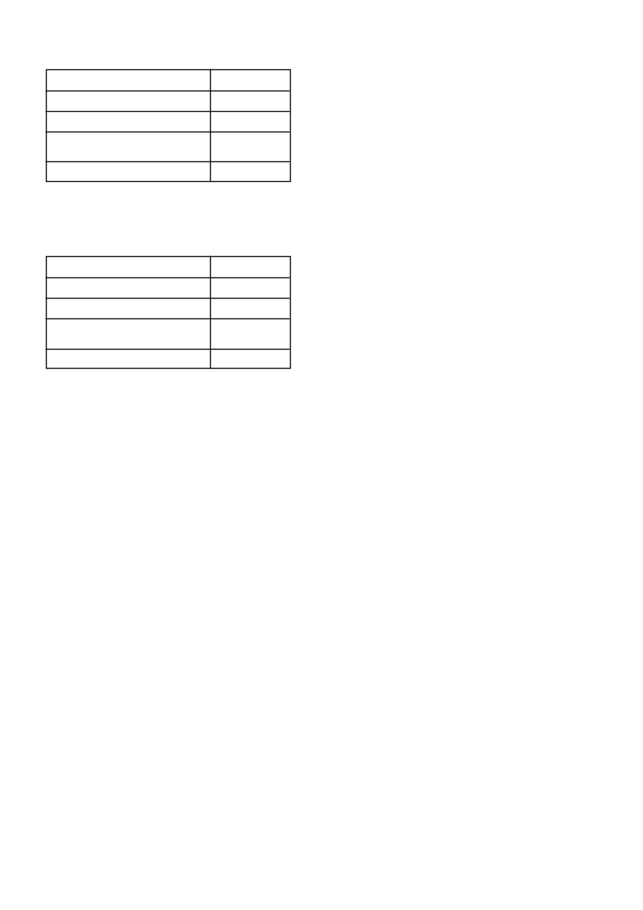

CAMIX PLUS
/ 2
Contact your local SYNGENTA representative to discuss
crop rotation and crop protection programmes to follow
before embarking on any pH adjustment programme.
4.3
Factors affecting weed control:
4.3.1 Pre-emergence application:
•
A well prepared seedbed, free of clods and weeds is a require-
ment for good pre-emergence weed control.
•
Prolonged dry soil conditions after a
pre-emergence
applica-
tion may result in reduced control of germinating weeds.
•
In soils with abnormal high organic matter or organic matter
residues on the soil surface e.g. burnt trash or “stoppels”
reduced residual action may be seen.
•
Do not use
CAMIX PLUS
under stress conditions e.g. water
logging, severe cold, excessive rain, poor fertilising, low pH,
etc.
•
Tank mixtures of
CAMIX PLUS
with organophosphates e.g.
chlorpyriphos should be avoided as damage to the maize
might occur.
•
CAMIX PLUS
should not be applied in cropping systems
where flood irrigation is used.
5. DIRECTIONS FOR USE:
Use only as indicated.
5.1
Compatibility:
CAMIX PLUS
is compatible with KARATE ZEON (L6330) and
KARATE EC (L3752).
5.2
Dilution water:
Use only clean water and buffer with a registered buffer.
5.3
Mixing instructions:
Fill the spray or pre-mix tank with clean water and engage agi-
tator. Agitation must be continued throughout the mixing and
spraying operation. Resuspend the spray mixture if agitation was
suspended for longer than 5 min.
When the spray or premix tank
is half full with water, add
CAMIX PLUS
slowly and agitate until
completely dispersed.
If tank mixed, add
CAMIX PLUS
first to the water. Then add the
emulsifiable concentrates e.g. KARATE EC.
Continue to fill the
tank to the required level with water whilst agitating.
5.4
Ground application:
CAMIX PLUS
must be applied the same day as mixing.
Apply by means of a tractor mounted boom sprayer which is
correctly calibrated with continuous agitation to deliver at least
200 - 300
l
spray mixture/ha. Avoid overlapping of spray swaths.
In case of certain pre-emergence applications with hydraulic
nozzles the water volume can be lowered to 100
l
spray volume/
ha. However, the use of the registered adjuvants at the correct
rates, correct nozzles and nozzle spacing, adequate coverage
and nozzle sizes are then very important . The disregard of these
factors will lead to poor control of certain weeds.
Flat fan hydraulic nozzles (110º) are recommended for optimum
coverage.
If these precautions are not adhered to the registration holder
cannot be held responsible for any non performance or damages
suffered.
Rain or irrigation of 10 - 20 mm is needed after application to
leach the chemical into the germinating zone. If this precipitation
does not happen within 14 days of application, reduced efficacy
can be expected.
5.5
Aerial application (maize – only pre-emergence appli-
cations)
i)
When the applied atrazine content is lower than 500 g ai/ha:
Wheat and barley
1 month
Grain sorghum
2 months
Potatoes
6 months
Soybeans, dry beans, groundnuts,
9 months
sunflowers and cotton
All other crops
24 months
ii)
Where the rate of atrazine applied does exceed 500 g ai/ha
but less than 1000 g ai/ha, the waiting periods mentioned
above may be reduced to 9 months except on the sandy soils
of the Northwest Province and North Western Free State,
which contain 0 - 10 % clay.
Wheat and barley
9 months
Grain sorghum
9 months
Potatoes
9 months
Soybeans, dry beans, groundnuts,
9 months
sunflowers and cotton
All other crops
24 months
The above waiting periods are valid only if the correct dosage rate
were applied and normal or above average rainfall occurred after
CAMIX PLUS
application.
All rotational crops should be planted only after thorough cul-
tivation. Since the product is metabolised by microbial activity,
periods of low microbial activity might extend the residual acti vity
of
CAMIX PLUS
.
Warning: Possible damage to triazine sensitive crops
•
Where soils have been treated with lime to correct the soil pH,
the possibility of crop damage increases dramatically in fields
where triazines were previously applied. This is due to the
triazine molecules being replaced on the clay complex with
calcium cations and the triazine thus becoming more available
in the soil-water complex.
•
No triazine sensitive crops should be planted in the season
after the soil pH adjustment has been done with lime. This
applies even if triazines were used at crop rotation rates in
previous years. Only maize should be planted in the season
directly after soil pH adjustment with lime.
•
Triazine sensitive crops include all broadleaf crops e.g. diffe-
rent bean crops, sunflowers and all cereals e.g. wheat.
•
These warnings however do not guarantee that no damage
would be experienced to even the following maize crop as
large volumes of previously applied triazines might now be
available depending on the volume of lime applied and the
rainfall experienced.
Warning: Possible increased efficacy, phytotoxicity and
residual action
•
Increasing the soil pH levels above 7 could produce conditions
for increased efficacy and reduced selectivity. This increased
pH may also result in increased soil residual action by certain
herbicides influencing the choice of following crops especially
under irrigation.
•
In situations where pH adjustments has been done, take care
when sulphonyl urea herbicides, triazolopyrimidine sulfonani-
lide herbicides and imidazolinone herbicides, which are all
sensitive to soil pH fluctuations, have been used or are about
to be used.
